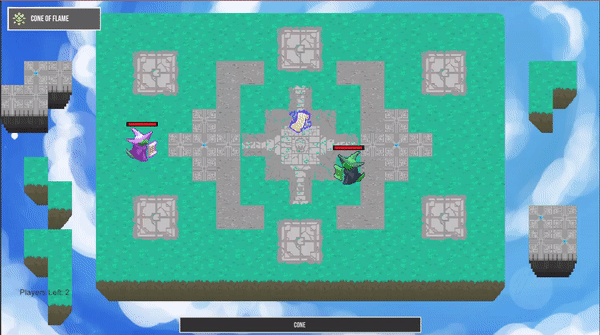
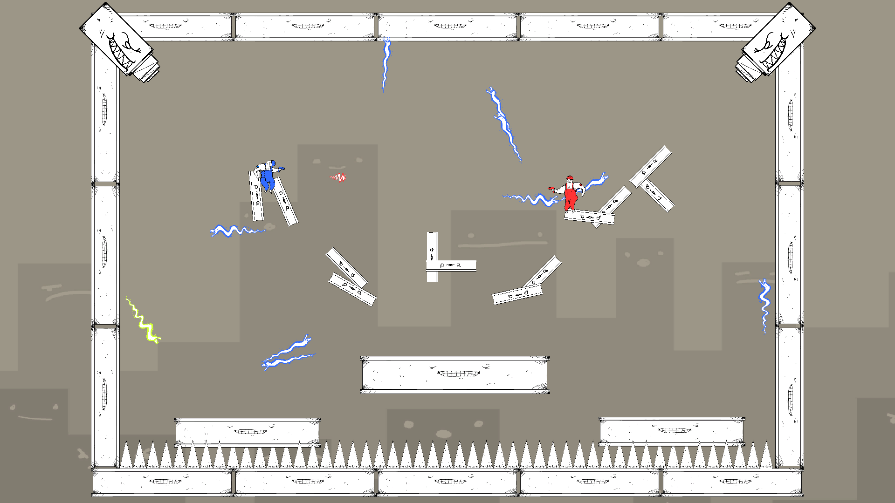
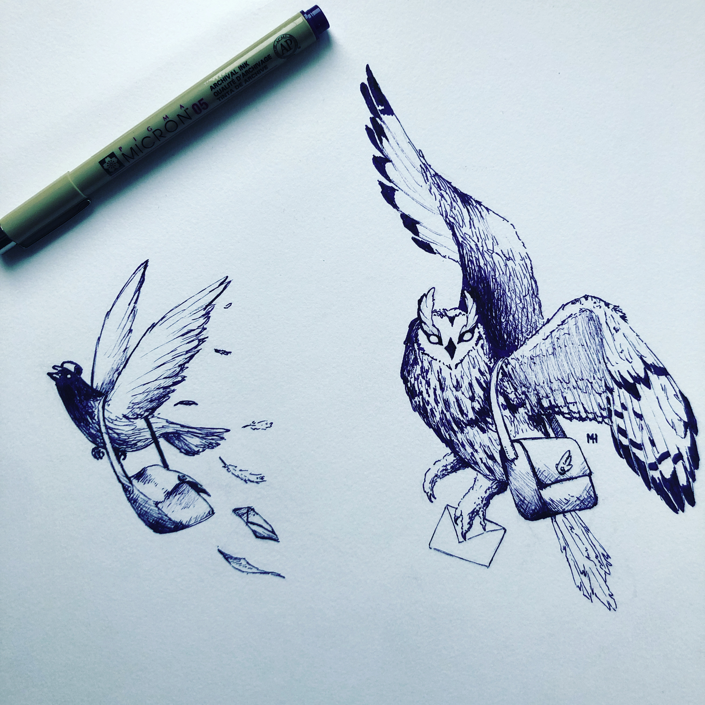
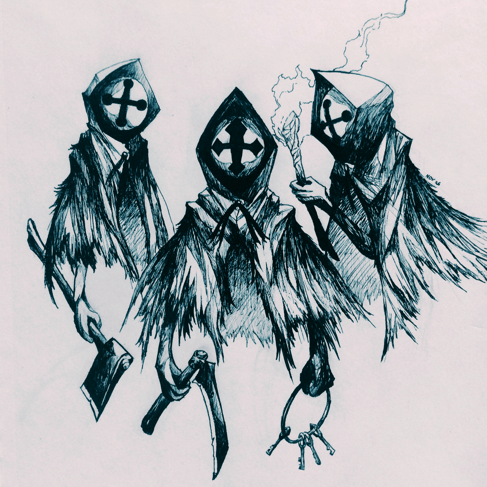
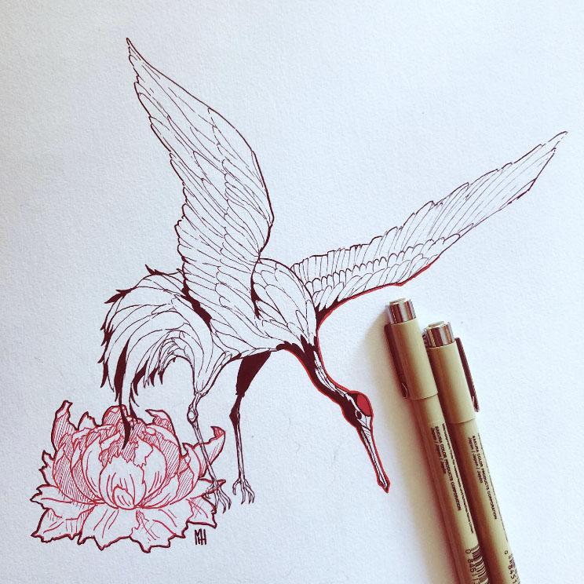
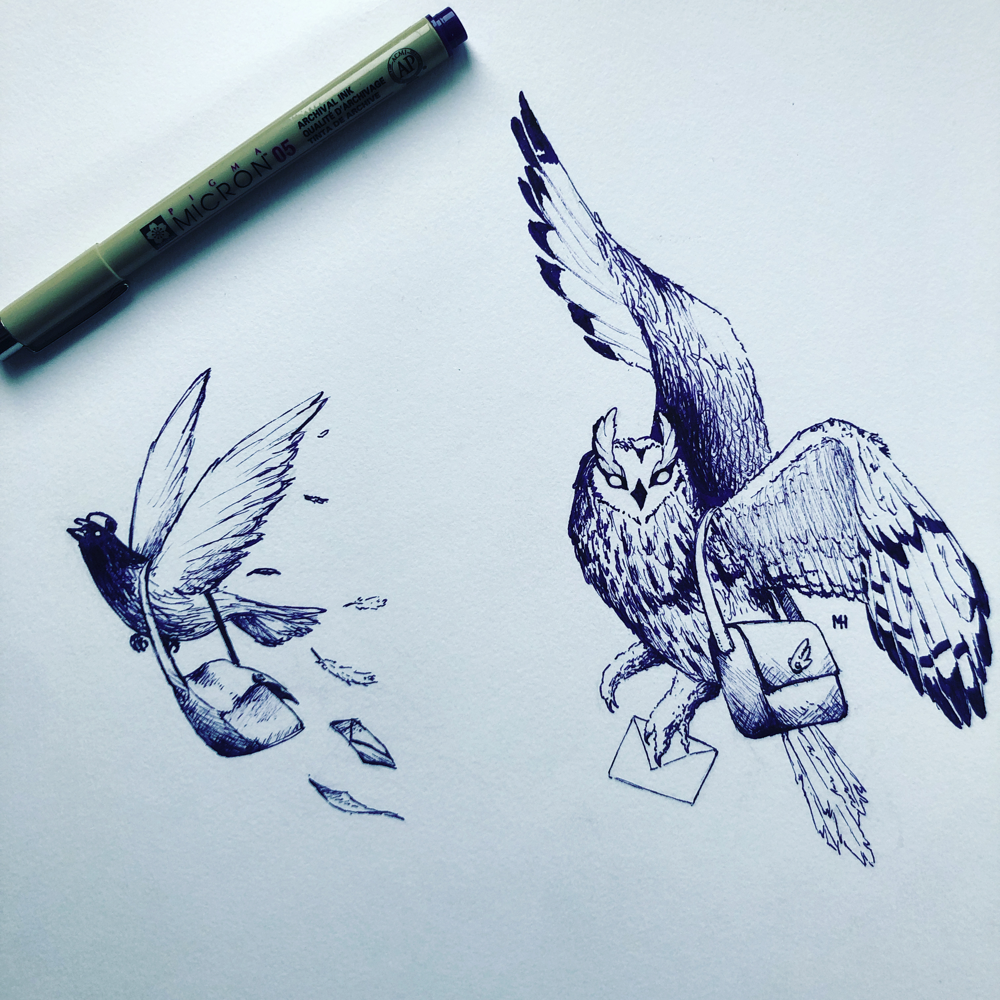
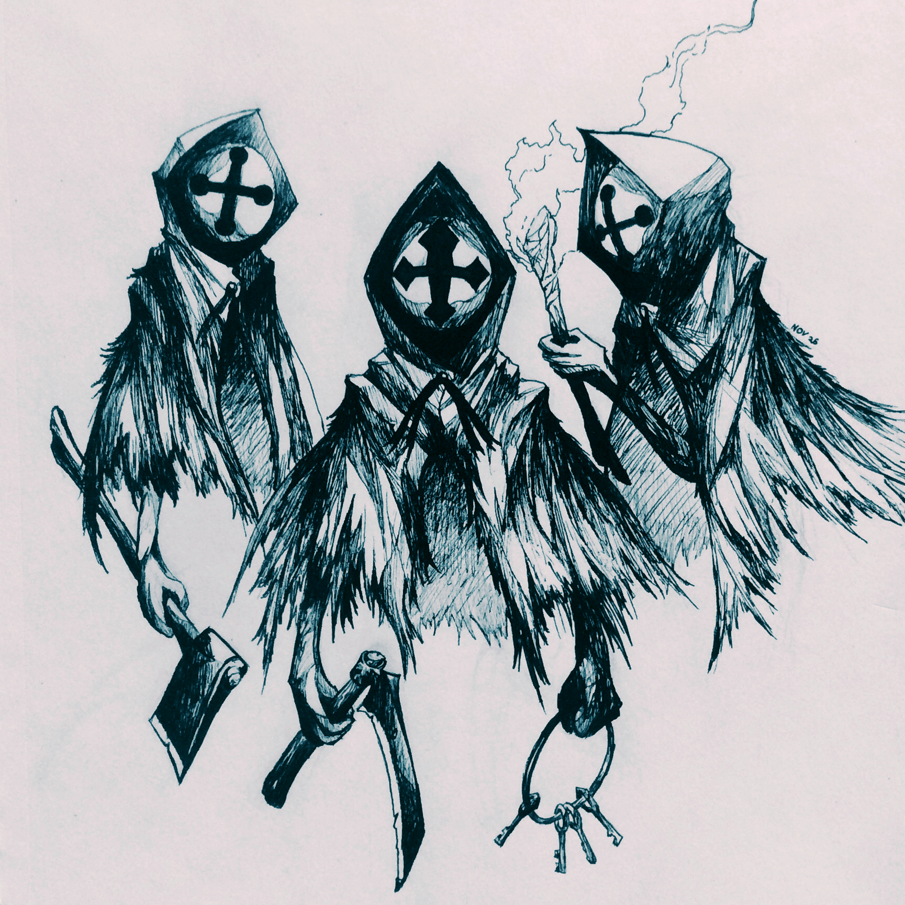
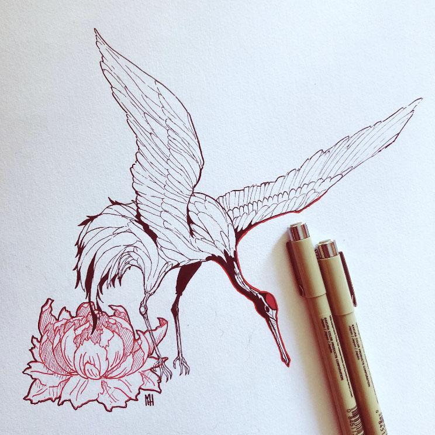

About Me
I'm a product designer currently studying Systems Design engineering at uWaterloo. I strive to make the design process collaborative in order to create products that are both innovative and tangible.
Outside of design work, I enjoy playing board games, learning languages, and drawing. You can view some of my work on this site and here.
View Resume
Sonova Innovation Lab
As a designer at the Sonova Innovation Lab in communitech, I had the
amazing opportunity to start on some innovative design concepts centered around helping users
affected by hearing loss. I worked on projects from the very beginning ideation stages to
user
testing and prototype iteration.
The work I did there is still in its early stages,
and
thus cannot be published publicly on this website. If you are interested in learning more,
please contact me at marcus.hum11@gmail.com.
Callisto-361
A synthesizer interface designed to be completely accessible for the blind
THE PROBLEM
As a project for an Engineering Design course, I worked in a team of 6 as a designer to create an accessible instrument. We tackled the following problem statement:
"Design a synthesizer interface that will be accessible and engaging for users who are or who have recently become completely blind allowing them to perform expressive and interesting electronic music."
Our team tackled this project using iterative design methods, gradually developing our instrument by applying the learnings gained after each iteration. Between each iteration was a round of user testing and background literature review to gain these insights. We had the incredibly fortunate opportunity of conducting user testing with blind users to truly make a design built for its users. You can view the iterations below.
First Iteration
Our first iteration tested the idea of a modular interface, allowing the user to customize the position of controls to suit their needs. However, testing with blind users demonstrated that this actually made it difficult to create an initial mental map of the interface. There was no single source of truth the user could reference for the layout, such as a manual or guidebook.
Key Learnings from user testing
- Physically distinct controls improves mental model
- Chosen synthesizer controls are expressive
- Positionable controls make it difficult to create a mental model
Second Iteration
Our second iteration focused on a single, more traditionally structured synthesizer interface, with the underlying distinction being that each control on the interface was unique. A large variety of types of controls was utilized, including dials, buttons, sliders, and joysticks. Additionally, controls were made with different materials, resulting in a different overall texture. To add to these differences, symbols were grafted on the tops of controls. The functionality of each control was prioritized to make distinct changes to the sound, providing the user with more feedback.
Key Learnings from user testing
- Additional physical controls (joystick, map) were intuitive for blind users
- Chosen synthesizer controls are expressive
- Height of interface was slightly too high
- Braille labels are needed for initial identification and naming
Final Iteration
Our final solution consisted of a synthesizer interface in which every control was physically unique in multiple dimensions. Dials had both different shapes and texture, and buttons had different numbers of bumps on them for differentiation. Braille labels were placed under each control to identify their function to the user. Controls that were commonly utilized together were placed next to one another, but enough space was given between controls to minimize unintentional inputs. The interface was compact in design, putting all controls within the 5th percentile for the maximum reach envelope of the seated female population, allowing them to all be operated without needing to reach forward. To validate that our solution solved the problem, our team performed user testing on blind users as well as blindfolded participants who had not yet seen the interface.

The design would be “successful” if users were able to identify all controls without sight, as well as determine the state of each control (e,g, the angle of a dial) without sight. Our current solution did a great job at having distinct inputs, but certain controls such as the dotted buttons were not easily distinguished. However, as a medium-fidelity prototype, the solution moved in the right direction from the second prototype, and thus qualified as a success.
Every four months, the University of Waterloo hosts an event called the GI Game Jam in which participating teams have 48 hours to create a game. These are the games I have created together with my incredibly scrappy teammates. My role within the team is the game designer and character artist.
The Electric Share
A dynamic 4-player shock arena

Lizard Wizards Learn to Spell
A massive multiplayer typing arena
A 3-vs-1 feeding frenzy

Hugh Jass Construction
A 1-on-1 platforming duel
 




